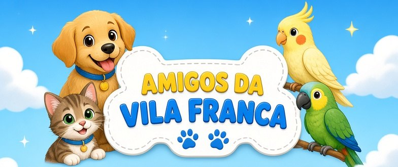

Por que castrar?
Uma única cadela não castrada pode gerar dezenas de filhotes ao longo da vida. A castração é a forma mais ética e eficaz de reduzir o número de cães abandonados, e ainda diminui brigas, fugas e algumas doenças.
Amigos da Vila Franca
Carregando…

Cães, gatos e aves do bairro, cuidados por quem mora aqui.
Entre com sua conta Google. É rápido e você não precisa criar senha.
Do Google usamos só seu nome e seu e-mail, para saber que o cadastro é seu. Política de privacidade
Projeto de extensão da UNINTER · Vila Franca, Piraquara/PR
Toque em um marcador para ver a ficha do cão.
Moradores que perderam seu animal. Se você viu algum, toque em “Vi este animal” e avise a família pelo WhatsApp.
Campanhas, feiras de adoção, alertas e avisos do projeto. Toque em Compartilhar para mandar no WhatsApp.
Quer divulgar uma campanha ou feira? Fale com o administrador do projeto.
Aprenda brincando e ganhe medalhas ajudando os animais do bairro.
1 de 10 medalhasSão 10 perguntas sorteadas de um banco com mais de 100, sobre cuidado com cães, gatos e aves.
Toque na resposta que achar certa. Depois aparece se acertou e uma explicação curta. Toque em “Próxima pergunta” para seguir.
No fim você recebe um nível: Aprendiz (até 4 acertos), Amigo dos Animais (5 a 7) ou Protetor da Vila (8 ou mais). Cada acerto vale 100 pontos, e acertos seguidos dão bônus (+25, +50, +75…). Seu melhor resultado entra no ranking.
Caramelo
Dê um nome e escolha a cor do pelo, as orelhas, a mancha, a coleira, o acessório e a carinha. O desenho muda na hora.
“Sortear” monta um vira-lata aleatório. “Salvar imagem” guarda a figura no celular para você mostrar ou usar de foto.
Montar ou sortear um vira-lata dá a medalha Artista da Vila.
Complete o tabuleiro com os animais. Cada animal aparece uma só vez em cada linha, em cada coluna e em cada quadrado (os blocos separados pelas linhas mais grossas).
Toque numa casa vazia e depois no animal. Se repetir, a casa fica com borda vermelha. Tocar no mesmo animal de novo apaga a casa.
Pontos: o nível dá a base (500, 1.000 ou 1.500), terminar rápido dá bônus, e dicas e animais repetidos descontam.
Coloque um bichinho em cada linha, em cada coluna e em cada região colorida.
Os bichinhos não podem encostar uns nos outros, nem na diagonal.
Use “Marcar X” para anotar as casas onde não pode ter bichinho. Colocar no lugar errado custa uma vida, e você tem 3.
Escolha o bichinho que quiser: gato, cachorro, papagaio, coelho ou calopsita. Só muda o desenho, a regra é a mesma.
Dica: comece pelas regiões pequenas e pelas linhas com poucas casas livres.
Pontos: o nível dá a base (500, 1.000 ou 1.500), terminar rápido dá bônus, e cada vida que sobrar vale mais pontos.
Quiz: 100 pontos por acerto, mais um bônus de sequência: o 2º acerto seguido vale +25, o 3º +50, e assim por diante. Errar zera a sequência.
Sudoku de Animais: pontos pelo nível (Fácil 500, Médio 1.000, Difícil 1.500), mais bônus por terminar rápido. Cada dica e cada animal repetido descontam pontos.
Bichos da Vila: pontos pelo nível (Fácil 500, Médio 1.000, Difícil 1.500), mais bônus por terminar rápido e por cada vida que sobrou.
Geral: soma o seu melhor resultado em cada um dos três jogos.
Vale o melhor resultado de cada pessoa. Para proteger a privacidade, aparece só o primeiro nome e a inicial do sobrenome.
As medalhas aparecem coloridas quando você conquista. As cinzas mostram embaixo o que falta fazer. Elas vêm de ajudar os animais de verdade (cadastrar, ajudar reencontros, convidar amigos) e dos jogos.
Números conferidos no site da Prefeitura de Piraquara em outubro de 2026.
Quem ajuda os animais na região. Toque em WhatsApp para conversar.
Conhece uma ONG, protetor ou clínica que ajuda os animais da região? Fale com o administrador do projeto para incluir aqui (só com autorização da pessoa ou entidade).
Uma única cadela não castrada pode gerar dezenas de filhotes ao longo da vida. A castração é a forma mais ética e eficaz de reduzir o número de cães abandonados, e ainda diminui brigas, fugas e algumas doenças.
Adotar é um compromisso para a vida toda do animal: alimentação, vacinas, vermífugo, abrigo e carinho. Antes de adotar, converse com a família e com a ONG responsável.
Gatos se reproduzem muito rápido: uma gata pode ter várias ninhadas por ano. Por isso a castração é o cuidado mais importante. Ofereça água e abrigo seco, e nunca dê leite de vaca, que faz mal a muitos gatos. Filhotes sem a mãe precisam de ajuda de um protetor ou veterinário.
Calopsitas, periquitos-australianos e canários são aves domésticas: se aparecer uma solta, ela provavelmente fugiu de casa, e vale cadastrar e procurar o dono na aba Animais perdidos.
Achou uma ave machucada? Não force água nem comida no bico: coloque numa caixa com furos, em local calmo e escuro, e procure um veterinário ou um protetor. Quem cria ave em casa deve manter a gaiola espaçosa, com água limpa, longe de fumaça e de vento forte.
Abandonar ou maltratar animais é crime (Lei nº 9.605/1998, art. 32). Em caso de maus-tratos, denuncie à Polícia Civil, à Polícia Militar (190) ou ao canal da prefeitura.
Excluir apaga seu cadastro (nome, e-mail e WhatsApp). Os animais e anúncios que você publicou continuam no app para ajudar a comunidade; se quiser apagá-los também, fale com o administrador.
Publicações que os moradores marcaram como problema. Veja e decida: apagar a publicação ou ignorar a denúncia.
Para apresentar o app no vídeo ou nos prints antes da coleta real. Os registros ficam marcados como exemplo.